Partició i gestió de disc Windows
Afegir un disc nou en Windows
En aquest apartat veurem com afegir un disc nou en Windows.
Imagina que t'has comprat un disc, el connectes a l'ordinador i no apareix. Això és molt comú, especialment en Windows. Normalment, cal inicialitzar-lo, crear la partició i assignar-li un volum perquè es pugui utilitzar.
Afegirem el disc simulant-ho amb VirtualBox.
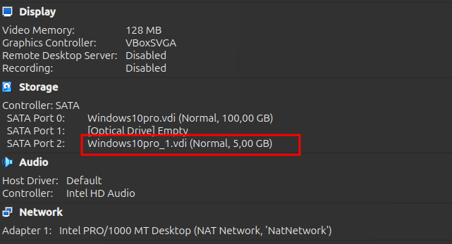
En el cercador de Windows, escriu "disc" i fes clic a l'opció Create and format hard disk partitions.
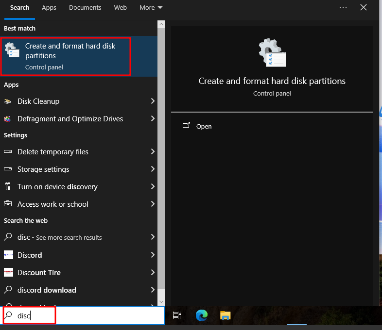
Aquí podem observar que ja ens apareix el nostre nou disc afegit.
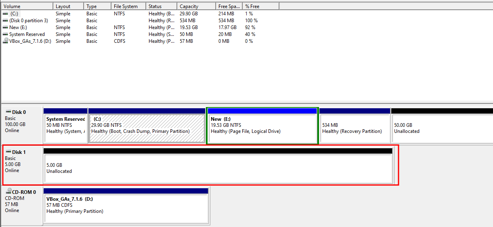
Fem clic dret sobre lespai no assignat i després seleccionem New Simple Volume.
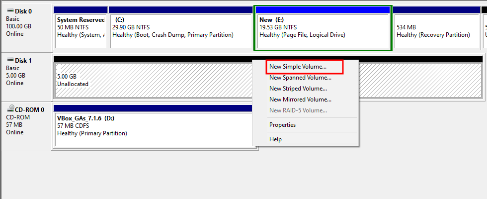
Aquesta finestra ens permet escollir la mida de la nova partició. Podem utilitzar tot lespai disponible o només una part si volem dividir el disc en diverses particions.
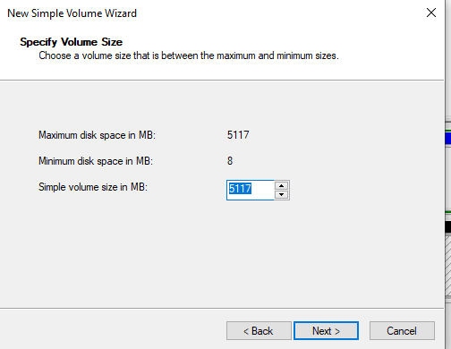
També podem assignar una lletra de unitat al disc o, si volem, muntar-lo dins dun directori existent en un sistema de fitxers NTFS.
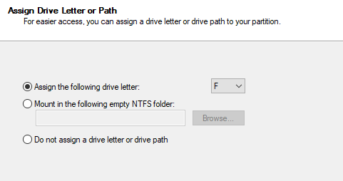
En aquest pas, seleccionem el sistema de fitxers que volem utilitzar. Per a aquesta prctica, seleccionarem FAT32. També podem posar-li un nom (etiqueta de volum) i seleccionar la mida de la unitat d'assignació (allocation unit size).
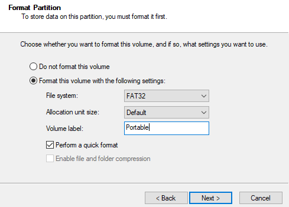
Un cop finalitzat, el disc ja estar preparat per ser utilitzat!
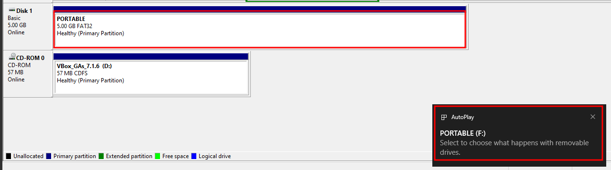
Podem també particionar el mateix disc en dos particions diferents una amb FAT32 i l'altra amb NTFS.
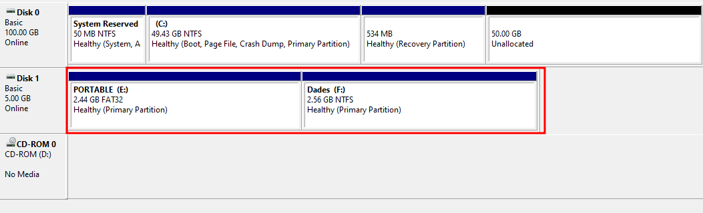
Podem comprovar la configuració del disc mitjançant la línia dordres amb leina diskpart. Aquesta ens permet veure quants discos hi ha, les particions de cadascun, lestat i el sistema de fitxers utilitzat, entre altres dades útils.
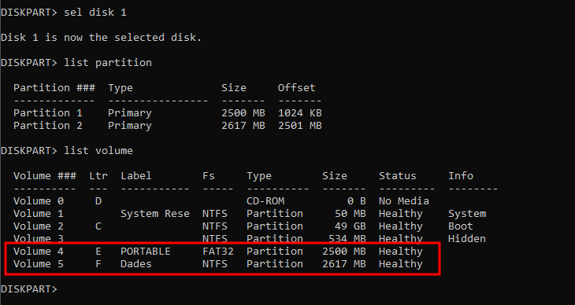
Quotes de disc
Les quotes de disc són una funcionalitat molt útil per limitar lespai que pot utilitzar cada usuari en un disc determinat. Això és especialment prctic en entorns amb múltiples usuaris, com a escoles o empreses, per evitar que un usuari ompli tot lespai disponible.
Activar les polítiques de quotes
Primer de tot, hem dhabilitar les quotes de disc a través de les polítiques de Windows. Això es pot fer mitjançant lEditor de polítiques locals o altres eines de configuració avançada.
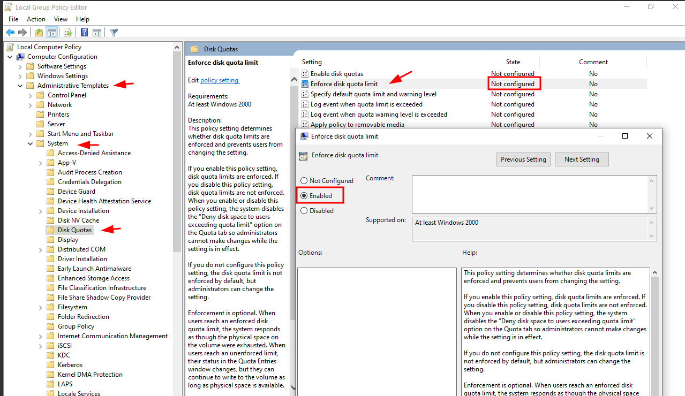
Activar les quotes en el disc
Per assignar quotes de disc:
- Ens dirigim al disc on volem aplicar-les (el que hem creat prèviament).
- Important: el sistema de fitxers ha de ser NTFS. Les quotes no funcionen amb FAT32.
- Fem clic dret sobre el disc i seleccionem Propietats.
- A la finestra que sobre, anem a la pestanya Quota.
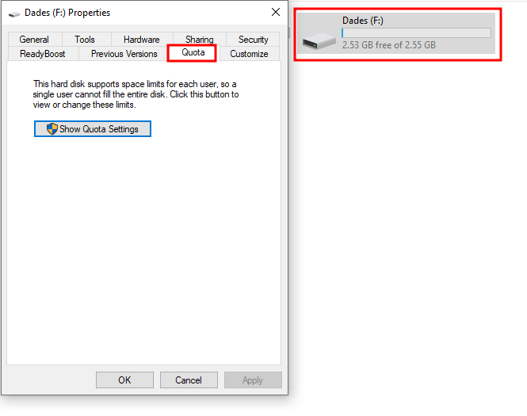
Configurar la quota de disc
- Fes clic a Show quota settings per accedir a la configuració detallada.
- Aquí pots activar la gestió de quotes, definir límits per usuari i configurar accions com mostrar avisos o bloquejar lescriptura quan se superi el límit.
- Pots especificar el límit en KB, MB o GB, segons les teves necessitats. En aquest exemple, seleccionarem MB per aplicar un límit moderat despai.
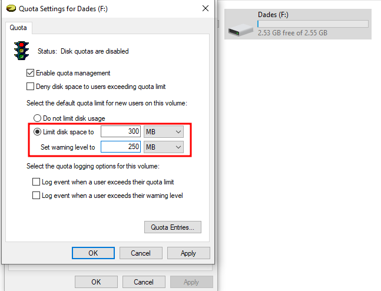
Un cop configurat, cada usuari tindr restringit lespai segons el límit que hagis establert.
Usuaris
A Windows hi ha diferents formes d'afegir usuaris, però una de les més prctiques i accessibles és mitjançant l'eina netplwiz. Aquesta utilitat permet gestionar comptes d'usuari locals de forma senzilla.
Comencem cercant netplwiz a la barra de cerca del menú Inici. Aquesta eina també es pot trobar com a "Advanced User Accounts Control Panel".
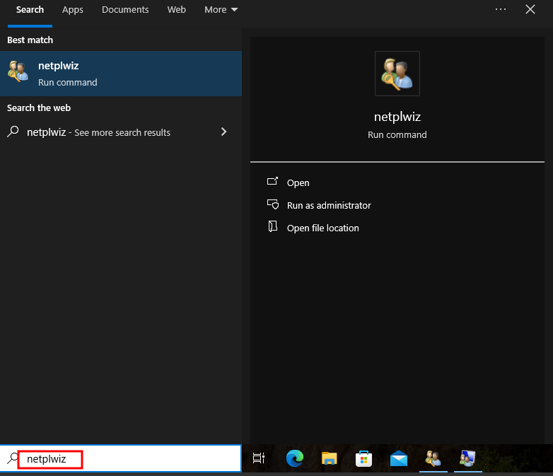
Un cop oberta la finestra, podem veure la llista dusuaris locals. Aquí mateix es poden afegir usuaris nous mitjançant el botó Afegeix, però si volem un control més detallat, fem clic al botó Advanced per accedir a la gestió avançada.
Aquesta opció obre la consola Local Users and Groups, on podem veure i administrar tant usuaris com grups de forma més granular.
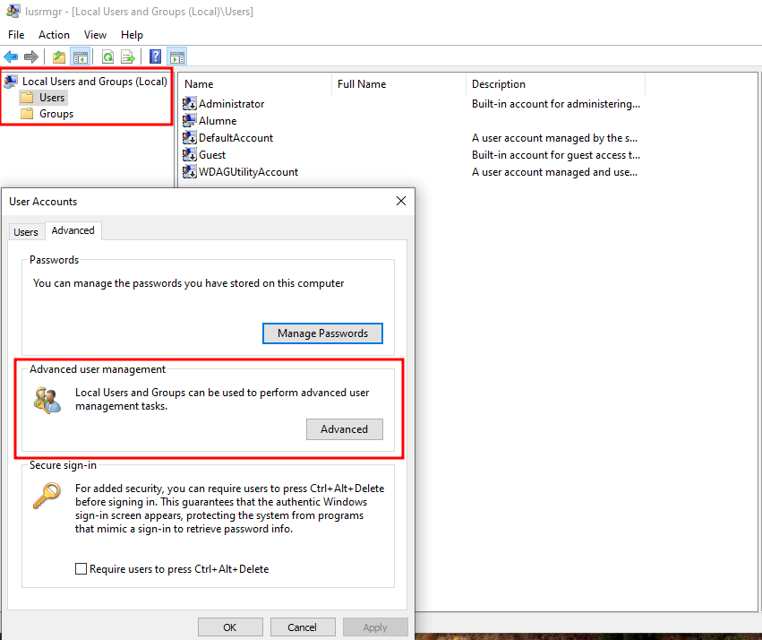
Dins la secció Users, si fem clic dret a l'espai buit o sobre qualsevol usuari, podem escollir New User per crear-ne un de nou. Aquí se'ns demana un nom d'usuari, una contrasenya (opcional), i també podem afegir una descripció i configurar opcions com obligar a canviar la contrasenya en el següent inici de sessió o impedir-ne la desactivació.
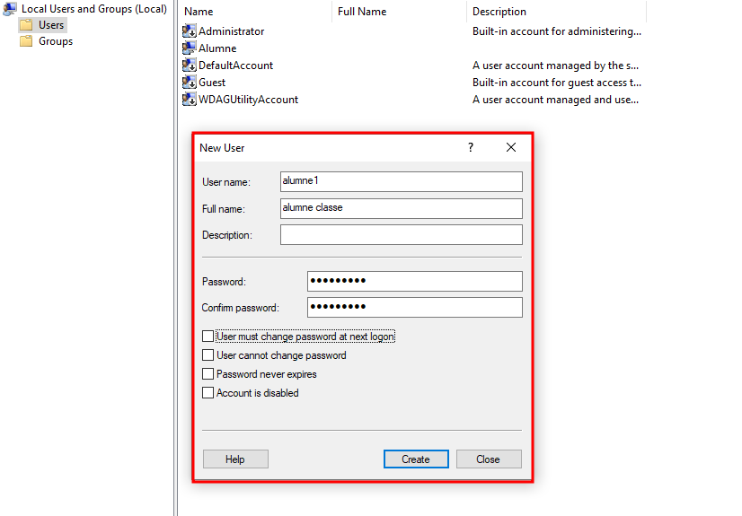
En aquest exemple, shan creat dos usuaris de prova per fer prctiques: per exemple, Alumne1 i Alumne2.
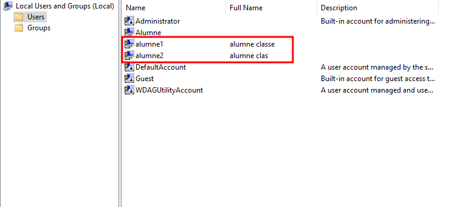
Ara podem crear un grup nou per agrupar aquests usuaris i aplicar permisos o configuracions comunes. Per fer-ho, anem a la secció Groups, fem clic dret i seleccionem New Group. Introdu茂m el nom del grup (per exemple, Prctiques) i podem afegir-hi usuaris fent clic a Add i escrivint els noms dels usuaris creats anteriorment.
Això és útil per a gestionar permisos en carpetes, programes o recursos compartits de manera col·lectiva.
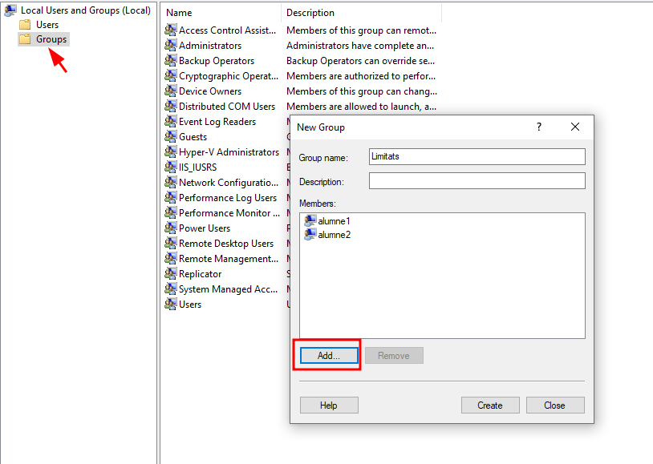
Un cop creats i afegits els usuaris al grup, podem comprovar aquesta informació fent clic dret sobre un usuari i obrint la pestanya Member of. Aquí veurem a quins grups pertany lusuari, com per exemple Users, Administrators, o el grup Limitats que acabem de crear.
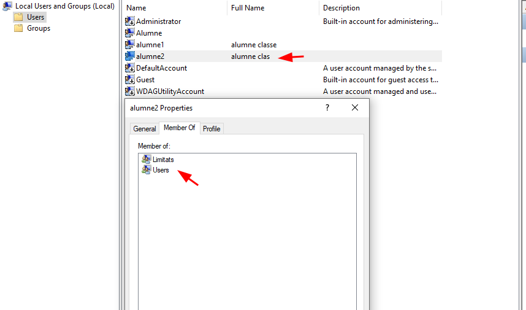
Per fer proves, podem iniciar sessió amb un dels nous usuaris, com ara Alumne1, i veure com es comporta el sistema segons les restriccions o permisos aplicats.
En aquest cas, hem copiat un fitxer gran i apareix un missatge de "Above limit" indicant que sha superat la quota de disc establerta per aquest usuari. Tot i que el sistema permet continuar, ens alerta del límit. Això es pot configurar perquè el sistema no permeti superar els 300MB, canviant la política de quotes en el sistema de fitxers NTFS.
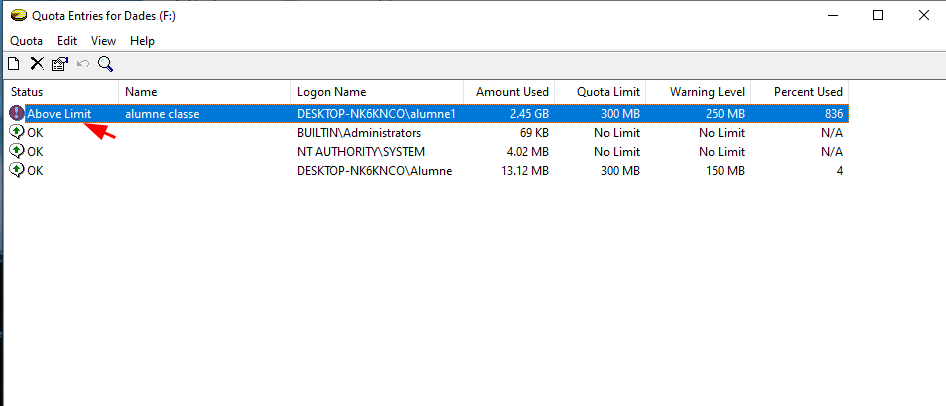